<title>Outfit Finder UX Review</title>
<meta name="claude:viewport-fit-sides" content="cover">
<link rel="preconnect" href="https://fonts.googleapis.com">
<link rel="stylesheet" href="https://fonts.googleapis.com/css2?family=DM+Sans:wght@400;500;700&family=Outfit:wght@700;800&display=swap">
<style>
/* Layout: one reading column; findings as rows with a severity chip; screenshots side by side, stacking on phones. */
:root {
  --bg: #FFF8F2; --surface: #ffffff; --ink: #1B1033; --muted: #51466B; --line: #1B1033; --rule: #EADFD4;
  --accent: #6C3BFF; --lemon: #FFD84D; --lilac: #D9CCFF; --mint: #A8EBCB; --coral: #FF9B85; --on-block: #1B1033;
  --high: #FF9B85; --med: #FFD84D; --low: #A9D8FF;
  --display: "Outfit", "Segoe UI", system-ui, sans-serif;
  --body: "DM Sans", "Segoe UI", system-ui, sans-serif;
}
@media (prefers-color-scheme: dark) { :root:not([data-theme="light"]) {
  --bg: #15102A; --surface: #221A40; --ink: #F6F1FF; --muted: #C3B8E4; --line: #F6F1FF; --rule: #3A2F66; --accent: #C9B8FF; color-scheme: dark } }
:root[data-theme="dark"] {
  --bg: #15102A; --surface: #221A40; --ink: #F6F1FF; --muted: #C3B8E4; --line: #F6F1FF; --rule: #3A2F66; --accent: #C9B8FF; color-scheme: dark }
body { background: var(--bg); color: var(--ink); font: 16px/1.55 var(--body); }
.wrap { max-width: 920px; margin: 0 auto; padding-block: 40px 64px; padding-left: max(16px, env(safe-area-inset-left, 0px)); padding-right: max(16px, env(safe-area-inset-right, 0px)); display: flex; flex-direction: column; gap: 40px; }
h1, h2, h3 { font-family: var(--display); margin: 0; text-wrap: balance; }
h1 { font-size: clamp(32px, 6vw, 48px); line-height: 1.05; letter-spacing: -.02em; }
h2 { font-size: 26px; }
h3 { font-size: 18px; }
p { margin: 0; max-width: 68ch; }
.m { color: var(--muted); }
.eyebrow { font-size: 13px; font-weight: 700; letter-spacing: .06em; text-transform: uppercase; color: var(--muted); }
section { display: flex; flex-direction: column; gap: 16px; }
.facts { display: grid; grid-template-columns: repeat(auto-fit, minmax(180px, 1fr)); gap: 12px; }
.fact { border: 2px solid var(--line); border-radius: 18px; padding: 14px 16px; background: var(--surface); }
.fact b { display: block; font: 800 28px/1.1 var(--display); font-variant-numeric: tabular-nums; }
.fact span { font-size: 14px; color: var(--muted); }
.list { display: flex; flex-direction: column; border-top: 2px solid var(--rule); }
.item { display: grid; grid-template-columns: 88px minmax(0, 1fr); gap: 4px 16px; padding: 14px 0; border-bottom: 2px solid var(--rule); }
.item p { grid-column: 2; }
.chip { align-self: start; justify-self: start; padding: 2px 10px; border: 2px solid var(--on-block); border-radius: 999px; font-size: 12px; font-weight: 700; color: var(--on-block); white-space: nowrap; }
.chip.high { background: var(--high); } .chip.med { background: var(--med); } .chip.low { background: var(--low); } .chip.fixed { background: var(--mint); }
.pair { display: grid; grid-template-columns: repeat(2, minmax(0, 1fr)); gap: 16px; }
figure { margin: 0; display: flex; flex-direction: column; gap: 6px; min-width: 0; }
figure img { border: 2px solid var(--line); border-radius: 14px; width: 100%; height: auto; display: block; background: var(--surface); }
figcaption { font-size: 13px; color: var(--muted); }
.note { padding: 12px 16px; border: 2px solid var(--line); border-radius: 16px; background: var(--lilac); color: var(--on-block); }
code { font-size: .92em; }
a { color: var(--accent); font-weight: 700; }
@media (max-width: 600px) { .pair { grid-template-columns: 1fr; } .item { grid-template-columns: 1fr; } .item p { grid-column: 1; } }
</style>

<main class="wrap">
  <header style="display:flex;flex-direction:column;gap:14px">
    <span class="eyebrow">UX / UI test · 25 November 2026 · Demo mode build</span>
    <h1>Outfit Finder UX review</h1>
    <p class="m">I ran the finished Blazor Server site, the sign-in server and the API on this machine and walked every main flow at desktop width and at phone width (390 px), in light and dark mode: home and upload, the live search steps, results (Buy it / Make it), the printable pattern, fix-a-box, sign-up and sign-in, My looks, Account & privacy, data export and the admin AI page. AI results were the built-in Demo data, so this review is about the interface, not the quality of real matches.</p>
  </header>

  <section aria-labelledby="h-summary">
    <h2 id="h-summary">At a glance</h2>
    <div class="facts">
      <div class="fact"><b>9</b><span>flows tested end to end</span></div>
      <div class="fact"><b>8</b><span>issues found and fixed during testing</span></div>
      <div class="fact"><b>16</b><span>suggestions still open</span></div>
      <div class="fact"><b>0 px</b><span>horizontal scroll at 390 px</span></div>
    </div>
  </section>

  <section aria-labelledby="h-fixed">
    <h2 id="h-fixed">Fixed during testing</h2>
    <div class="pair">
      <figure>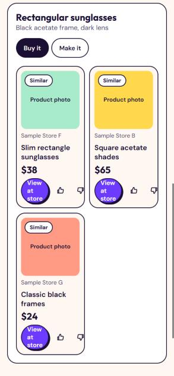<figcaption>Before: on a phone, "View at store" collapsed into a circle and the thumbs-down icon was clipped.</figcaption></figure>
      <figure>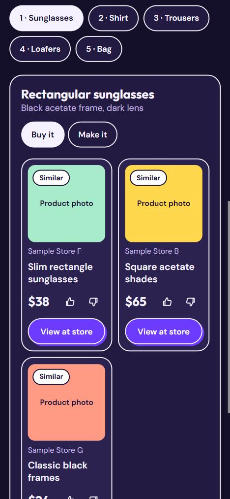<figcaption>After: price and feedback share a row; the store button spans the card.</figcaption></figure>
    </div>
    <div class="pair">
      <figure>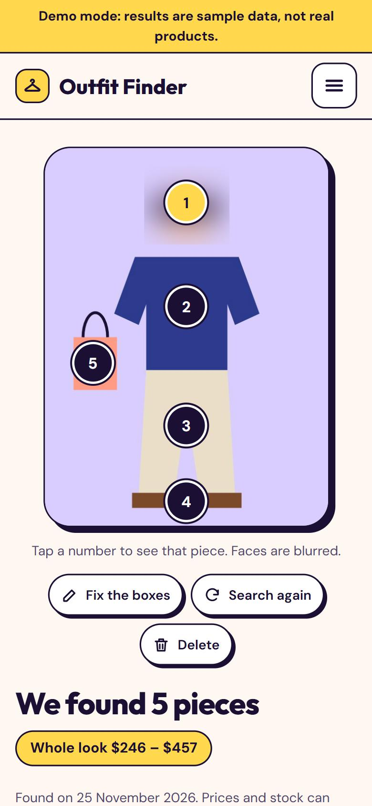<figcaption>Before: on a phone the photo and buttons filled the first screen.</figcaption></figure>
      <figure>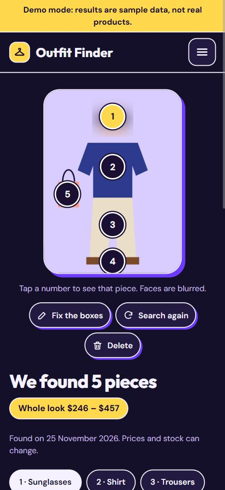<figcaption>After: a smaller photo brings "We found 5 pieces" and the chips onto the first screen.</figcaption></figure>
    </div>
    <div class="pair">
      <figure>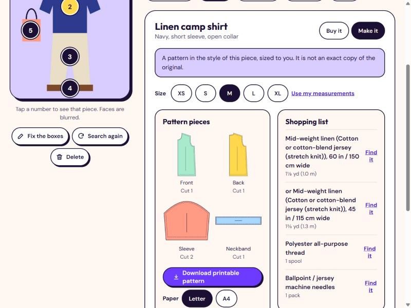<figcaption>Before: "Mid-weight linen (Cotton … jersey (stretch knit))", "Find it" broken over two lines, fold pieces labelled "Cut 1".</figcaption></figure>
      <figure>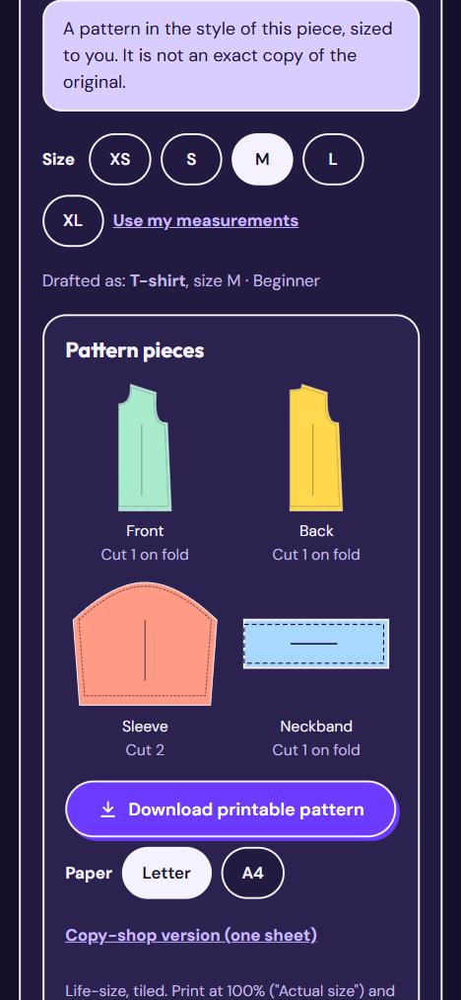<figcaption>After: "Drafted as: T-shirt", "Cut 1 on fold", and fabric that matches the block.</figcaption></figure>
    </div>
    <div class="list">
      <div class="item"><span class="chip fixed">Fixed</span><h3>"View at store" wrapped to three lines on desktop too</h3><p>Same layout fix as the phone card.</p></div>
      <div class="item"><span class="chip fixed">Fixed</span><h3>A T-shirt pattern printed on 25 Letter pages</h3><p>The layout now tries several sheet widths and keeps the one with the fewest pages, and waist casings and the neckband are drafted as half pieces cut on the fold. A T-shirt now prints on 20 Letter pages, a skirt on 20 Letter or 15 A4. Trousers still need 30, because the legs are over a metre long.</p></div>
      <div class="item"><span class="chip fixed">Fixed</span><h3>Admin page showed "· ·" when no model was set</h3><p>The status line now reads "Now using Demo · set in app configuration".</p></div>
      <div class="item"><span class="chip fixed">Fixed</span><h3>Deleting an account failed with a server error</h3><p>Found by the automated tests: pattern jobs were deleted twice (once directly, once by the database cascade). Account deletion now removes everything in one step.</p></div>
      <div class="item"><span class="chip fixed">Fixed</span><h3>An edited look could be shown to someone else</h3><p>Found by the tests: after fix-a-box, the look stayed in the photo cache, so another person uploading the same photo would get the edited result. Edited looks now leave the cache.</p></div>
    </div>
  </section>

  <section aria-labelledby="h-open">
    <h2 id="h-open">Suggestions to improve the app</h2>
    <p class="m">Ordered by impact on a first-time visitor. "High" means it affects whether people trust or finish a search.</p>
    <div class="list">
      <div class="item"><span class="chip high">High</span><h3>Show the user's own photo while searching</h3><p>The "Finding your look…" screen shows an empty grey box, because only the blurred copy is stored and it doesn't exist yet. Show a local preview from the browser (it never leaves the device) so people see that the right photo is being searched. <a href="before-02-loading-empty-photo.jpg">Screenshot</a></p></div>
      <div class="item"><span class="chip high">High</span><h3>Run Phase 0 with the real AI before polishing further</h3><p>Every match card currently says "Product photo" because demo data has no images. Real results depend on the model returning live product links and images; the checklist is in <code>docs/PHASE0.md</code>. If the model rarely returns image URLs, fetch each store page's preview image on the server.</p></div>
      <div class="item"><span class="chip high">High</span><h3>Keep the human check out of the way</h3><p>The Cloudflare check renders on the home page for every visitor before they do anything, and takes space next to the main button. Render it only after a photo is chosen, or use Turnstile's invisible mode. <a href="before-01-home-desktop.jpg">Screenshot</a></p></div>
      <div class="item"><span class="chip high">High</span><h3>Sign-in pages ignore dark mode</h3><p>The sign-in server is a different site, so it can't read the theme chosen on the main site and always opens light. Pass the theme in a cookie on the shared parent domain once both are on the real domain. <a href="before-09-register-mobile-light-only.jpg">Screenshot</a></p></div>
      <div class="item"><span class="chip med">Medium</span><h3>Say how many searches are left</h3><p>Anonymous visitors get 5 searches a day and only learn this when they hit the limit. Show "3 of 5 free searches left today" near the upload button and on "Search again".</p></div>
      <div class="item"><span class="chip med">Medium</span><h3>Make the piece chips sticky on phones</h3><p>On a phone, scrolling through matches hides the chips, so switching pieces means scrolling back up. A sticky chip bar under the header would fix this.</p></div>
      <div class="item"><span class="chip med">Medium</span><h3>Explain when a pattern is a simplified version</h3><p>A camp shirt is drafted with the T-shirt block. "Drafted as: T-shirt" now says so; a one-line reason ("closest pattern we have; collars and buttons are not included") would set expectations. Next blocks to add: button-up shirt, simple dress, shorts.</p></div>
      <div class="item"><span class="chip med">Medium</span><h3>Show the page count before printing</h3><p>"Prints on 20 Letter pages, or one copy-shop sheet 74 × 107 cm" helps people choose between home printing and a copy shop.</p></div>
      <div class="item"><span class="chip med">Medium</span><h3>Larger touch handles in fix-a-box</h3><p>The resize handle is 22 px, half the 44 px touch target used everywhere else. After saving, scroll back to the photo and offer "Undo".</p></div>
      <div class="item"><span class="chip med">Medium</span><h3>One history across the website and the extension</h3><p>Anonymous looks from the extension and from the website are kept apart (different visitor IDs), and "Open full results" only appears after sign-in. Offer a one-time "send to website" link, or prompt sign-in right after the first extension search.</p></div>
      <div class="item"><span class="chip med">Medium</span><h3>Clarify the whole-look price</h3><p>"Whole look $246 – $457" mixes exact and similar matches. "From $246 for similar pieces" is easier to read, with exact-match totals shown separately when they exist.</p></div>
      <div class="item"><span class="chip low">Low</span><h3>Acknowledge thumbs up / down</h3><p>The button fills in, but a short "Thanks, this improves your results" note would make it clear that the feedback was saved.</p></div>
      <div class="item"><span class="chip low">Low</span><h3>Shorter demo banner on phones</h3><p>"Demo mode: results are sample data, not real products." wraps to two lines at 390 px. "Demo mode: sample results" fits on one.</p></div>
      <div class="item"><span class="chip low">Low</span><h3>Highlight "My looks" only on the list</h3><p>The "My looks" menu item stays highlighted on a single result page. Add a "Back to My looks" link on results instead.</p></div>
      <div class="item"><span class="chip low">Low</span><h3>Check the sign-up checkbox with a screen reader</h3><p>The accessibility tree names the age and terms checkbox "true" (its value). Confirm with NVDA or VoiceOver; if it is read that way, add an explicit <code>aria-labelledby</code>.</p></div>
      <div class="item"><span class="chip low">Low</span><h3>Use real timings in the loading text</h3><p>"This usually takes under a minute" is a guess. Replace it with the median time from real searches once Phase 0 is done.</p></div>
    </div>
  </section>

  <section aria-labelledby="h-notverified">
    <h2 id="h-notverified">Not covered by this test</h2>
    <div class="note">Real AI results and costs (no provider key yet), MySQL in Docker (Docker Desktop's engine would not start on this machine; the MySQL test is written and skips until Docker runs), Azure Content Safety rejections against the real service, the Chrome extension inside Chrome (it builds; load it unpacked to try it), password-reset emails, the Azure deployment, and measuring a printed test square with a ruler.</div>
  </section>

  <section aria-labelledby="h-more">
    <h2 id="h-more">More screens from the test</h2>
    <div class="pair">
      <figure>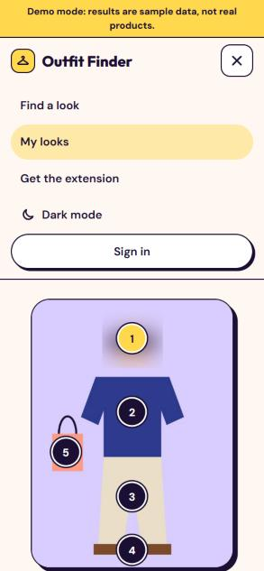<figcaption>Phone menu, light mode.</figcaption></figure>
      <figure>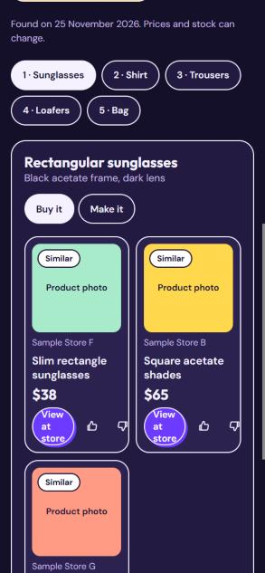<figcaption>Results, dark mode, phone.</figcaption></figure>
    </div>
    <div class="pair">
      <figure>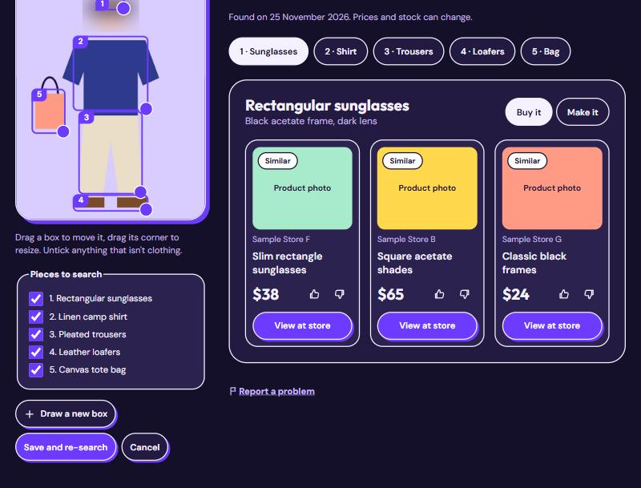<figcaption>Fix-a-box editor.</figcaption></figure>
      <figure>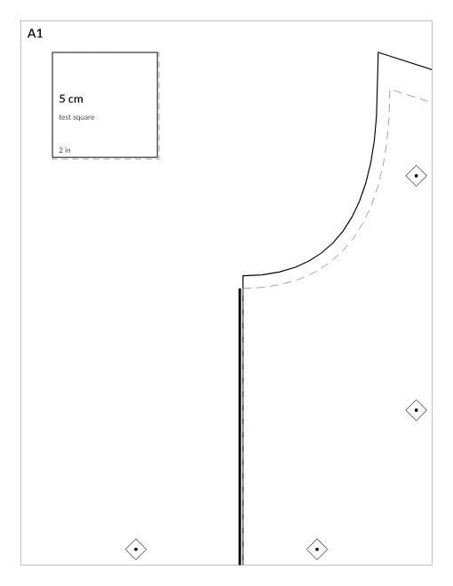<figcaption>Pattern page A1: 5 cm and 2 in test squares, fold line, alignment diamonds.</figcaption></figure>
    </div>
    <div class="pair">
      <figure>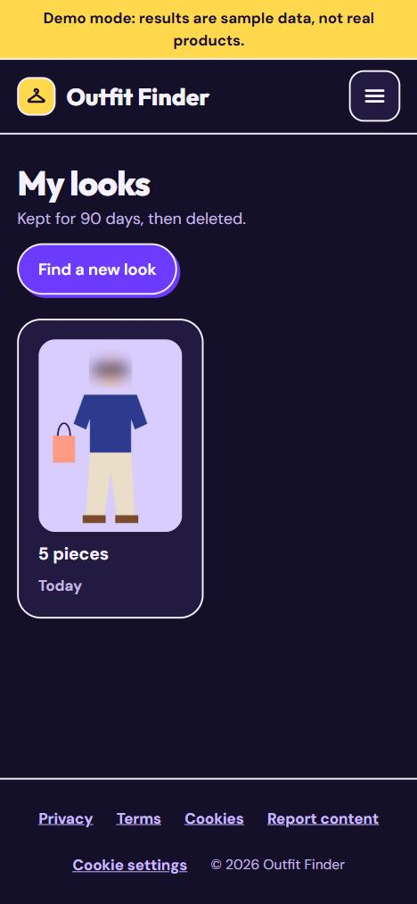<figcaption>After sign-up, the look found anonymously is in the account.</figcaption></figure>
      <figure>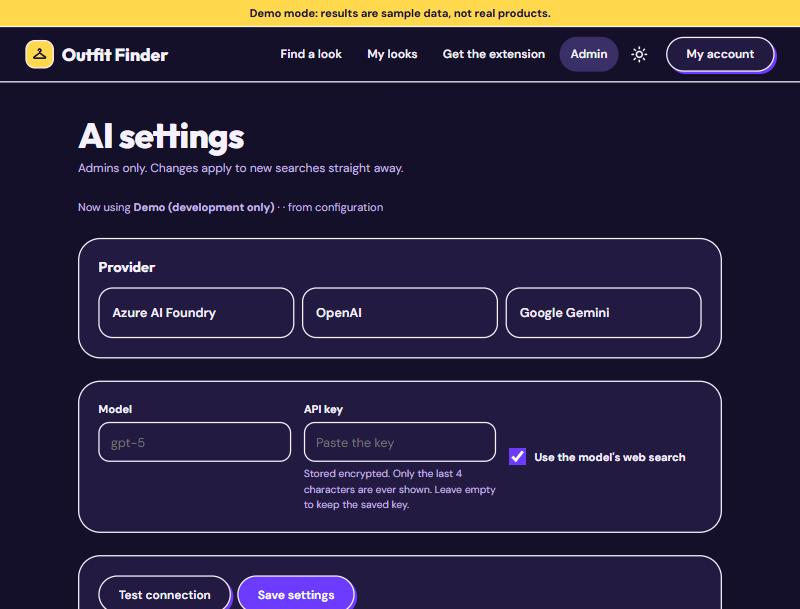<figcaption>Admin AI settings (before the status-line fix).</figcaption></figure>
    </div>
  </section>
</main>
